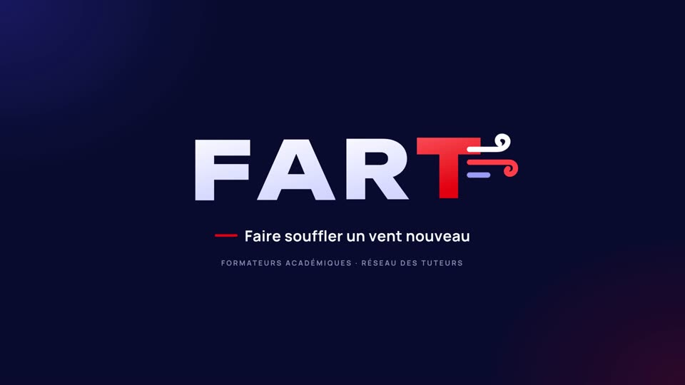

Animer la séance
Le même déroulé se répète pour chaque scène. Chacune dure moins d'une minute.
- Distribuer la grilleUne fiche par personne. Faits observés d'un côté, questions pour l'entretien de l'autre.
- Projeter la scèneLes participants notent ce qui est dit entre guillemets, ce qui est fait sans guillemets, et le minutage.
- Pause échangeLa vidéo se fige sur trois questions. Mettez en pause et laissez le groupe réagir.
- Scène suivanteRelancez quand l'échange est terminé. La dernière question renvoie à la première scène.
Les six scénettes
Cliquez sur l'image pour lancer la scène. « Projeter » la passe en plein écran pour le vidéoprojecteur.

Tout en un
Le film complet
Ouverture FART, les six scènes enchaînées avec leurs écrans de pause, puis la fin « À vous : qu'avez-vous observé ? ». Mettez en pause à chaque écran d'échange.
Grilles d'observation
PDFGrille par compétencesSécuriser son enseignement, prendre en main sa classe…
PDFFiche d'observation de séanceFaits, questions à poser, propositions du tuteur
Les personnages
| Mme Morel | Professeure de français, 2e année |
| Yanis | Arrive en dernier, garde son blouson |
| Inaïa | Bavarde, assise sur la table à l'arrivée |
| Mehdi | Au fond de la classe, décroche |
| Clara | Sérieuse, au premier rang |